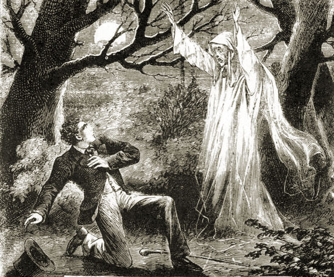

Cursed Gravestones
In the early 1900s, there was a grave of a man that came back to haunt his relatives every single night. This stopped once his gravestone was buried deep in a landfill in gravel form by a mining company.
In the early 1900s, there was a grave of a man that came back to haunt his relatives every single night. This stopped once his gravestone was buried deep in a landfill in gravel form by a mining company.

Story coming.